Modèle SASI
Cette étude vise à examiner l'impact de politique publique pour contrôler une épidémie à travers deux types d'agent infectieux. Nous examinons différentes politiques publiques à mettre en oeuvre dans le cadre d'un contrôle d'épidémie : l'efficacité de la quarantaine, diagnostic rapide et l'immunité de groupe.
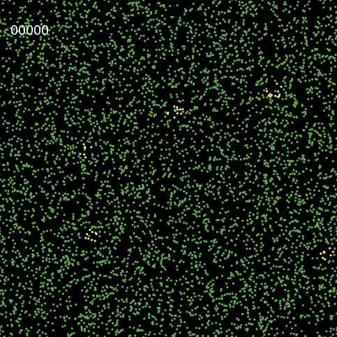
Description du modèle SASI
Le modèle SASI intègre deux sous modèles : un modèle de mobilité et un modèle à compartiment d'épidémiologiques. Le modèle de mobilité décrire un mouvement brownien des agents dans un espace à deux dimensions. Un agent en quarantaine est immobile. Le modèle à compartiment d'épidémiologiques (cf. ci-dessous) définie les probabilités de transition entre les différents état de l'agent. Un agent peut prendre les états suivant : sain, asymptomatique, symptomatique, rétablie, mort, immuniser.

Deux scénarios épidémique
Nous analysons deux hypothèses : un virus produisant une population asymptomatique (scénario pop-asymptomatique) et sans une population asymptomatique (scénario pop-sans-asymptomatique).
Paramètres
Le tableau ci-dessous donne l'ensemble des paramètres du modèle pour les deux scénarios de virus différents : pop-asymptomatique, pop-sans-asymptomatique. Pour les deux scénarios, la période de l'infection d'un agent dure en moyenne 20 ticks. C'est-à-dire le nombre de ticks d'un agent en état asymptomatique plus le nombre de ticks d'un agent en état symptomatique correspond en moyenne à une période de 20 ticks.
La population est répartie uniformément sur le territoire
Les paramètres p-sains et p-vacciner sont étudié dans la section immunité de groupe.
| Paramètres\Sénarios | pop-asymptomatique | pop-sans-asymptomatique |
|---|---|---|
| Densité | 0.04 agent/patch | |
| Nombre de patients zéros | 5 | |
| rayon | 4 | |
| p-asymptomatiques | 1 | |
| p-symptomatiques | 0.1 | 1 |
| p-immuniser | 0.1 | 0.05 |
| p-mort | NaN | |
| p-sains | NaN | |
| p-vacciner | NaN | |
Comparison de l'évolution de l'épidémie des deux sénarios
La durée de l'épidémie est similaire pour les deux scénarios. Le nombre de personnes symptomatiques est deux fois plus élever pour le scénario pop-sans-asymptomatique par rapport au scénario pop-asymptomatique. Néanmoins, pour les deux scénarios le nombre d'infecté, la durée d'infection, le R0 (envrion égale à 0.99) est le même. Tout du long de la période d'infection, les agents peuvent transmettre la maladie.| 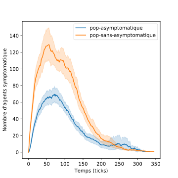 | 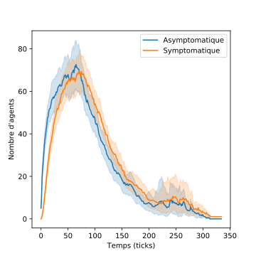 |
L'efficacité de la quarantaine
Question : La quarantaine de la population symptomatique est-elle une mesure efficace pour contrôler une épidémie ? Nous faisions hypothèse que seules les personnes symptomatiques peuvent être identifié pour être mise en quarantaine. Cela correspondant au stade 2 du plan de réaction français face à la pandémie de coronavirus.
Impact de la quarantaine de la population symptomatique
La figure ci-dessous montre le taux de contamination en fonction de la quarantaine de deux scénarios : une infection avec une population asymptomatique et une infection sans une population asymptomatique. Le calcul des statistiques est basé sur 100 expériences. La mise en place d'une quarantaine des personnes identifiée infectée à un impact significatif sur la réduction du taux de contamination total. Les infection avec une période asymptomatique faible un ou deux ticks réduit le temps taux de contamination. Dans ce cas de figure, le stade 2 du plan de préventions apporte une solution efficace. Dans le cas d'une phase asymptomatique sur longue période, l'efficacité du stade 2 (l'application de la quarantaine à porteur symptomatique) se trouve de facto limite puisque le virus continue de circuler.
| 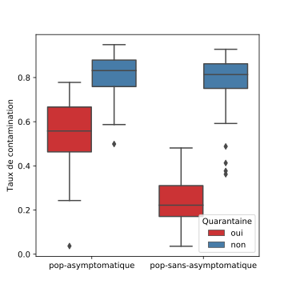 | 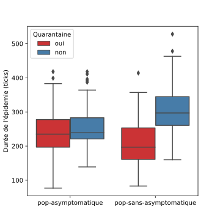 |
Évolution de l'épidémie en fonction de la quarantaine
Mise en quarantaine des porteurs symptomatique.
| 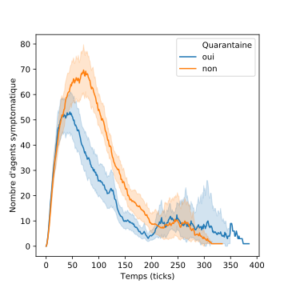 | 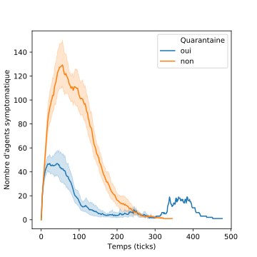 |
Impact de la densité sur l'efficacité de la quarantaine
Diagnostic rapide d'une maladie infectieuse
Dans la section précédent discutant de la mise en quarantaine des symptomatiques, nous observons la limite de l'efficacité de cette méthode à cause du grand nombre asymptomatique qui propage l'infection.Identifier les porteurs asymptomatiques
Nous étudions l'utilisation de diagnostic rapide pour identifier les porteurs asymptomatiques afin de les mettre en quarantaine. Chaque jour, une proportion de la population est sectionnée aléatoirement reçoive un test rapide, si le test est positif, les porteurs asymptomatiques est mise en quarantaine. D'après la figure 7, idéalement 30% de la population tirée aléatoirement doit utiliser un test rapide chaque jour pour une faible proportion d’infecté totale de 25% de la population.
| 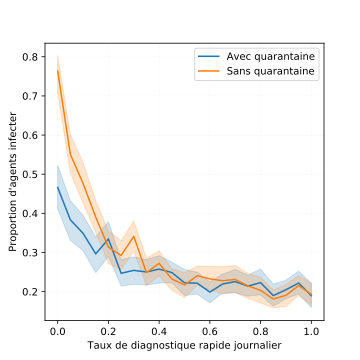 | 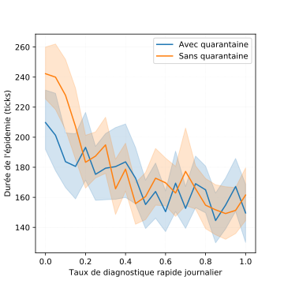 |
Immunité collective
L'immunité collective est acquise par l'immunisation naturelle ou par la vaccination.Couverture vaccinale
Dans cette étude (cf. figure x), la couverture vaccinale est effective avant le déclenchement de l'épidémie. Nous évaluions de degrés de couverture en fonction de la proportion d'agents infecter durant l'épidémie. L'immunité est considérée comme acquise définitivement, c'est-à-dire que la probabilité de devenir sains est égale à zéro.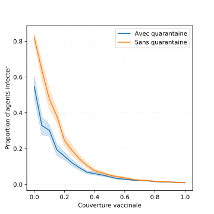
Épidémie cyclique

Facteur de mobilité
Nous étudions dans cette section l'impact des différences de vitesse de mobilité entre les agents dans le cadre du scénario pop-sans-asymptomatique. Deux groupes de mobilité sont définis : groupe 1 et groupe 2. Le groupe 1 à une vitesse de mobilité fixé à 1 et le groupe 2 à une vitesse de mobilité paramétrable. Plus un groupe d'individus est mobile, c'est-à-dire une vitesse de déplacement élevé, plus ce groupe est un vecteur de la maladie (voir figure 13). La figure 13 montre en fonction des deux groupes de mobilité le nombre total de transmissions de la maladie. Lorsque les deux groupes adoptent la même vitesse de déplacement, le nombre de transmissions par groupe est équivalent. Lorsque les deux groupes ont une vitesse différente, en l'occurrence le groupe 2 à une vitesse plus élevé, le groupe se déplaçant le plus rapidement est le vecteur de transmissions principal. Les agents toucher par l'infection sont indifférents de la vitesse de mobilité. Tous les agents ont à la même chance d'être infecté par la maladie (voir figure 14).
| 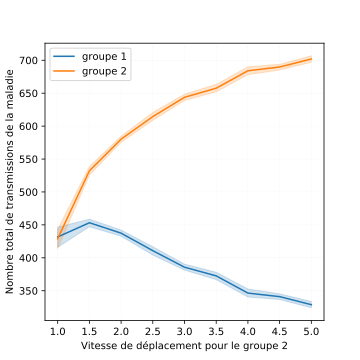 |

|
Conclusions
- Constitution de l'immunité de groupe par les moins fragiles.
- Utilisation de test de diagnostic à large échelle
- Une répartition uniforme de la population sur le territoire